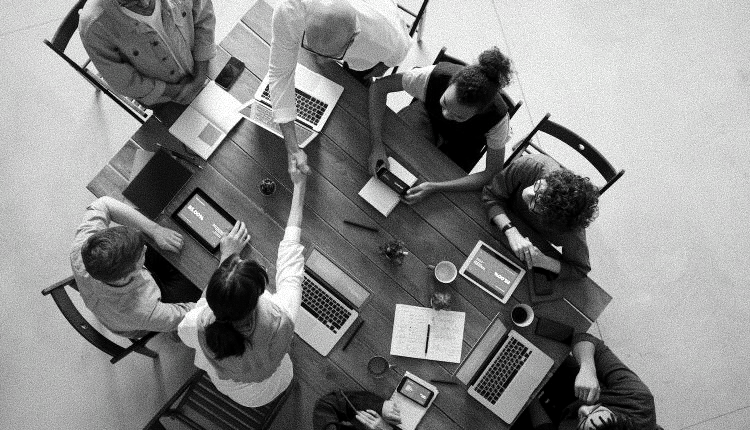

Conheça as oportunidades de voluntariado
Clique em saber mais para conhecer a lista de oportunidades das ONGs e se voluntariar.
Saiba como se voluntariar
Descubra diversas formas de fazer a diferença em sua comunidade. No nosso site Conecta você tem a chance de participar de projetos significativos, do seu interesse. Transforme vidas, desenvolva suas habilidades e crie laços duradouros. Junte-se a nós e contribua para um mundo mais unido e solidário. Inspire-se, atue e transforme.
